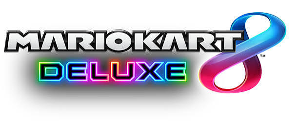
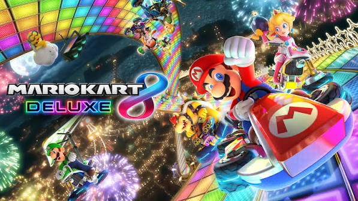
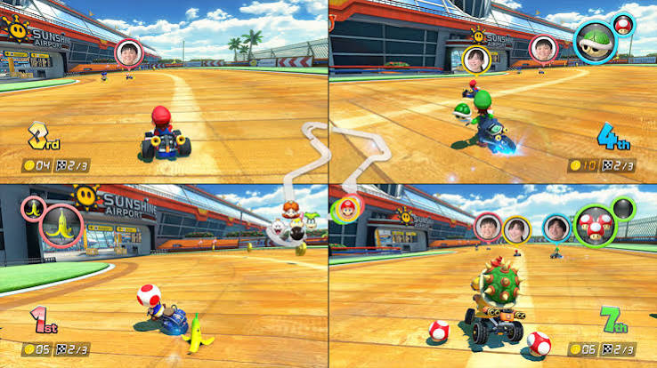

From the Wii U struggle to becoming the undisputed king of arcade racing on the Nintendo Switch.
Released in May 2014 for the struggling Wii U console, *Mario Kart 8* introduced a groundbreaking gameplay mechanic: anti-gravity driving. Players could race upside-down and vertically along walls, bumping into opponents for a speed boost. Despite the Wii U's low hardware sales, the game was universally praised for its gorgeous HD visuals, tight controls, and incredible orchestral soundtrack.

Recognizing that millions of gamers missed out on the Wii U version, Nintendo launched *Mario Kart 8 Deluxe* in April 2017 for the Nintendo Switch. It included all original DLC characters and tracks, a completely revamped Battle Mode with dedicated arenas, and the ability to hold two items at once. It became an instant console-seller and a cultural multiplayer phenomenon.

Between 2022 and 2023, Nintendo shocked fans by releasing the massive Booster Course Pass, doubling the game's track count to 96 courses by remastering iconic tracks from past titles, mobile, and retro games. Selling over 60 million copies, Mario Kart 8 Deluxe stands as one of the best-selling video games in history.
